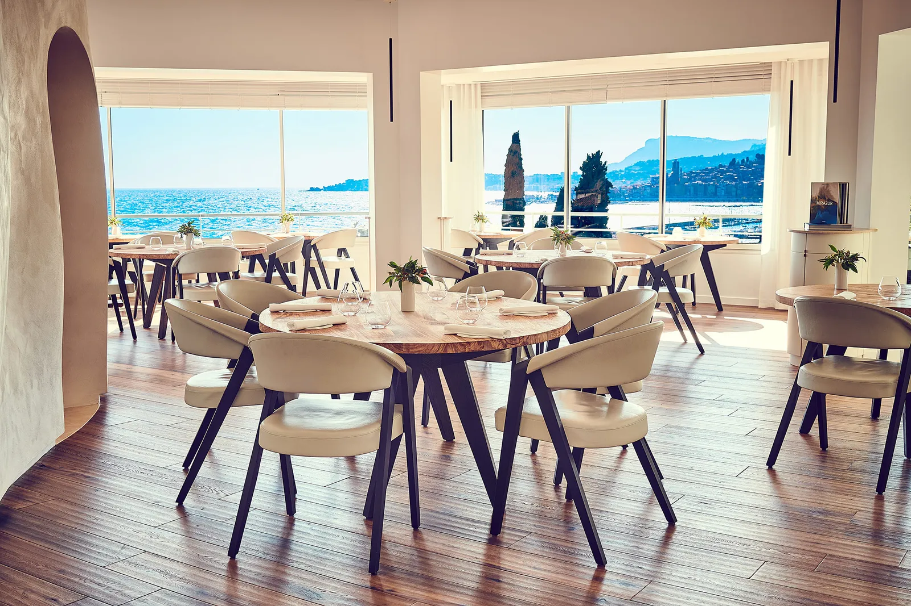

<ion-header [translucent]="true">
  <ion-toolbar>
    <ion-title>
      <ion-fab horizontal="center"  vertical="center" >
        <ion-fab-button size="small" color="primary" >
          <ion-icon name="person-circle-outline"></ion-icon>
        </ion-fab-button>
    
        <ion-fab-list side="start">
          
          <ion-fab-button color="secondary" (click)="Navegar('login')" >
            <ion-icon name="log-in-outline"></ion-icon>
          </ion-fab-button>
          Ingresar
        </ion-fab-list>

        <ion-fab-list side="end">
          
          <ion-fab-button color="tertiary" (click)="Navegar('cocinero-pedidos')" >
            <ion-icon name="person-add-outline"></ion-icon>
          </ion-fab-button>
          Registro
        </ion-fab-list>


      </ion-fab>
    </ion-title>
  </ion-toolbar>
</ion-header>


<ion-content class="card-background-page">
<br>
  <ion-card>
    
      
      <div class="card-title">#RestoZonaSur</div>
    
  </ion-card>
  <div id="container">
    <strong>Bienvenidos a la aplicación comanda del Resto Zona Sur.</strong>
  </div>
  <ion-card>
    
      
      <div class="card-title">#RestoZonaSur</div>
    
  </ion-card>
  <div class="derechosReservados">© Todos los derechos Reservados</div>
</ion-content>


<!-- 
<ion-content [fullscreen]="true">
  <div id="container">
   <strong>Bienvenidos a la aplicacion comanda del Resto Zona Sur.</strong>
  </div>
</ion-content> -->
